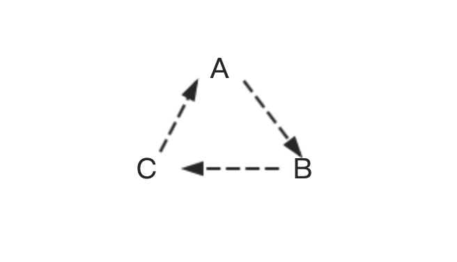
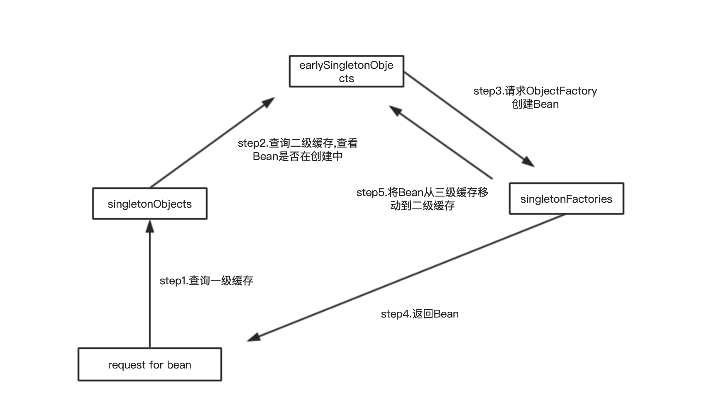

Spring循环依赖问题
目录:
1.简介
循环依赖(cycle-dependency)是指对象间的依赖形成了一个环(loop),如下
A---->B----->C
^ |
| v
------------D
其中A依赖B,B依赖C,C依赖D,D依赖A,这种依赖关系形成了一个环。当Spring容器中Bean之间的产生循环依赖时，如果不加以解决,会出现异常.
2.Spring循环依赖产生场景
如图所示,A、B、C之间形成了循环依赖.当Spring容器想要创建A对象时,发现A依赖了B,这是Spring就不会实例化(Instantiate)对象A,而是回去实例化对象B;当Spring容器想要实例化B的时候,发现B依赖了C,同理Spring容器就去实例化C；当Spring容器实例化C时,发现C依赖了A,Spring就去实例化A;这样Spring容器就会陷入一个环中.

3.解决方法
Spring采用三级缓存的方法来解决循环依赖.Spring解决循环依赖的依据是基于JAVA的引用传递,当获取到对象的引用时,对象field是可以延后设置,但是使用有参数的构造器实例化对象时,需要首先获取到构造器参数的引用.
createBeanInstance实例化--->populateBean填充Bean属性--->initializeBean初始化Bean
- createBeanInstance：实例化Bean，即创建Bean对象，调用类默认的构造方法或者带参数的构造器
- populateBean：填充Bean属性，对Bean依赖的属性进行填充
- initalizeBean：初始化Bean
从上面讲述的单例bean初始化步骤我们可以知道，循环依赖主要发生在第一、第二步。也就是构造器循环依赖和field循环依赖。
那么我们要解决循环引用也应该从初始化过程着手，对于单例来说，在Spring容器整个生命周期内，有且只有一个对象，所以很容易想到这个对象应该存在Cache中，Spring为了解决单例的循环依赖问题，使用了三级缓存。
如下是Spring三级缓存用来解决循环依赖：
/** Cache of singleton objects: bean name --> bean instance */
private final Map<String, Object> singletonObjects = new ConcurrentHashMap<String, Object>(256);
/** Cache of singleton factories: bean name --> ObjectFactory */
private final Map<String, ObjectFactory<?>> singletonFactories = new HashMap<String, ObjectFactory<?>>(16);
/** Cache of early singleton objects: bean name --> bean instance */
private final Map<String, Object> earlySingletonObjects = new HashMap<String, Object>(16);
- singletonObjects ：用来存放单例Bean(已经创建完成的，依赖关系已经满足) -- 一级缓存
- earlySingletonObjects: 存放提前曝光的单例对象(实例化完成，但是依赖关系没有满足,即创建中的Bean;与singletonFactoies互斥，即Bean不会同时存在earlySingletonObjects和singetonFactories中) -- 二级缓存
- singletonFactoris: 单例对象工厂cache -- 三级缓存
当创建Bean的时候，调用getSingleton接口，首先是从singletonObjects中获取；如果没有再去earlySingletonObjects中获取；如果还是没有则从singletonFactories中获取单例对象，然后将其放到earlySingletonObjects中。下面是Spring容器中具体代码实现
protected Object getSingleton(String beanName, boolean allowEarlyReference) {
Object singletonObject = this.singletonObjects.get(beanName);
if (singletonObject == null && isSingletonCurrentlyInCreation(beanName)) {
synchronized (this.singletonObjects) {
singletonObject = this.earlySingletonObjects.get(beanName);
if (singletonObject == null && allowEarlyReference) {
ObjectFactory<?> singletonFactory = this.singletonFactories.get(beanName);
if (singletonFactory != null) {
singletonObject = singletonFactory.getObject();
this.earlySingletonObjects.put(beanName, singletonObject);
this.singletonFactories.remove(beanName);
}
}
}
}
return (singletonObject != NULL_OBJECT ? singletonObject : null);
}
从上面分析可知，解决问题的关键在于singletonFactories。这个接口在下面被引用
protected void addSingletonFactory(String beanName, ObjectFactory<?> singletonFactory) {
Assert.notNull(singletonFactory, "Singleton factory must not be null");
synchronized (this.singletonObjects) {
if (!this.singletonObjects.containsKey(beanName)) {
this.singletonFactories.put(beanName, singletonFactory);
this.earlySingletonObjects.remove(beanName);
this.registeredSingletons.add(beanName);
}
}
}
如下图,是Spring容器解决循环依赖的逻辑图。我们用A<--->B循环依赖配上下面的图来说明 
当Spring容器实例化A的时候发现需要B，首先将A放到三级缓存里面去实例B。B实例化的时候需要A，首先B查询一级缓存，发现没有；然后查询二级缓存，知道从三级缓存找到需要的A，然后把A从三级缓存删除并放到二级缓存。此时，B初始化完毕，然后将B放到一级缓存中(此时B中的A依然是创建状态)。此时回来创建A，然后查找B，直接从一级缓存找到B，然后完成A的创建，并将A放到一级缓存中。
单例bean的依赖注入分为构造器注入和setter方法注入。
1，Spring只会解决setter方法注入的循环依赖，构造器注入的循环依赖会抛BeanCurrentlyInCreationException异常。 2，Spring不会解决prototype作用域的bean，因为Spring容器不进行缓存"prototype"作用域的bean，因此无法提前暴露一个创建中的bean。如果有循环依赖会抛BeanCurrentlyInCreationException异常。
Spring依赖注入方式
- 接口注入
- Setter方法注入
- 构造方法注入
Spring容器无法解决构造器循环依赖(构造器循环依赖：即各个依赖Bean之间是使用有参数的构造器实例化)的原因：依然使用A<-->B举例，Spring容器想要实例化A，但是发现A的构造器依赖B，这是就不实例化A(注意和setter方法注入的区别)，进而去实例化B；Spring容器实例化B的时候，发现B的构造器依赖A，这时就去实例化A，到此就发生了循环依赖的问题。由于构造器依赖无法先生成实例，所以Spring容器无法解决此类的循环依赖。
4.总结
了解什么是循环依赖，循环依赖产生的原因和场景。Spring容器通过三级缓存的方式解决循环依赖，但是只能够解决单例setter注入的循环依赖，而不能解决原型Bean，构造器注入的循环依赖。